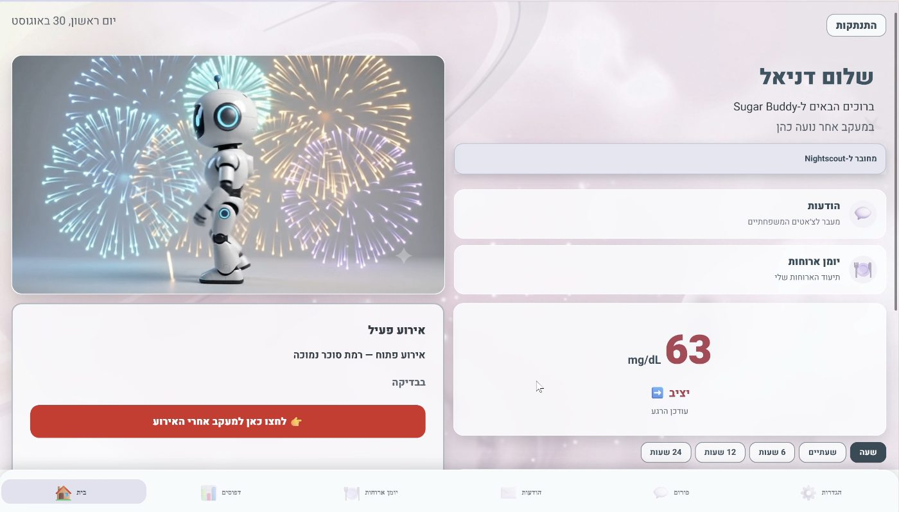
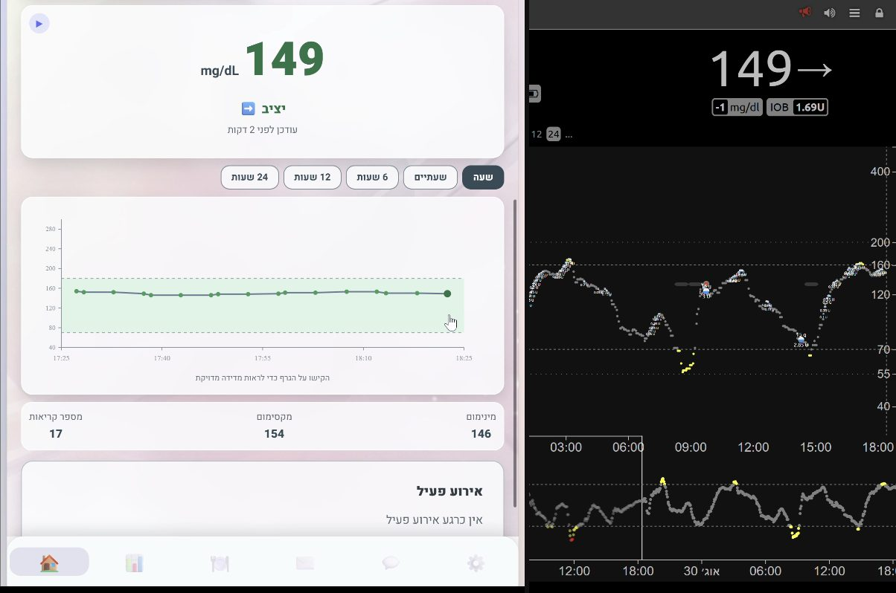
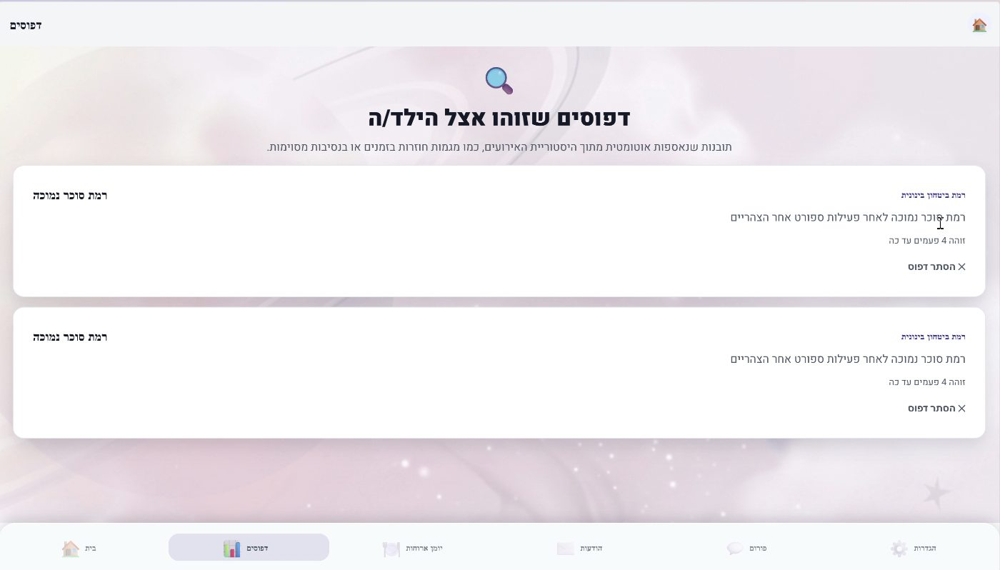
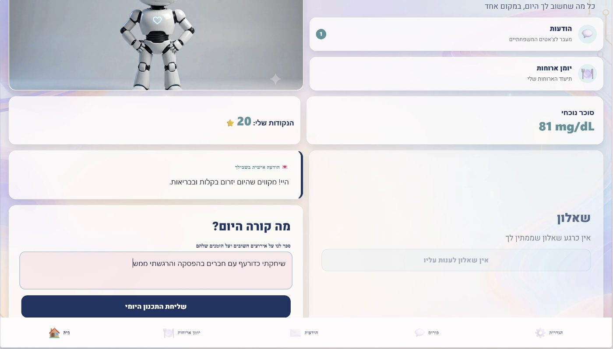
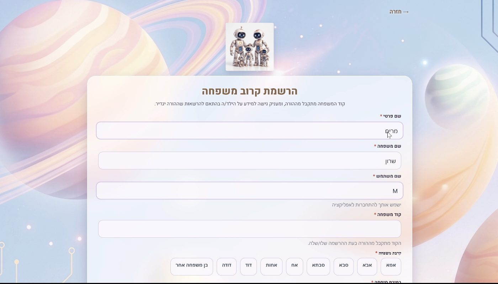
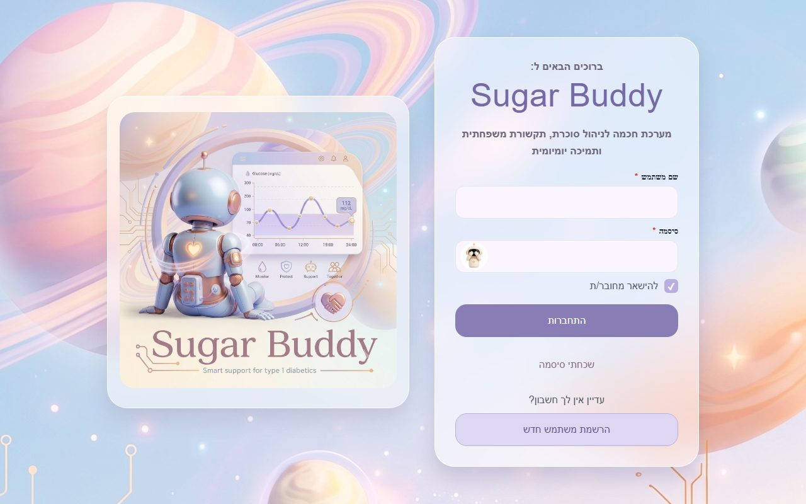

A full-stack app for teens with Type 1 diabetes and their families. When a glucose reading looks wrong, it checks in with the teen, works out what probably happened, and helps the parent respond calmly instead of panicking.
Teens with Type 1 diabetes wear a sensor that measures their glucose all day. When a number spikes or drops, the parent usually gets an alarm and nothing else: no context, no idea what happened. The result is worry, and often an argument with the teen.
We wanted the opposite: a calm, short conversation that figures out what probably happened and helps the family learn from it over time.
A real product, not a prototype: one app that works in the browser and on iPhone and Android, a backend, a background service that watches the sensor data, and an AI agent. Three kinds of users each get their own experience: the teen, the parent, and other family members the parent chooses to share with.
A background service reads each teen's glucose data and flags abnormal events as they happen.
Right after an event, the teen answers a few quick questions about food, insulin and activity.
The agent weighs the answers and the teen's history, may ask one follow-up question, and explains the most likely cause. It is guarded against misuse and prompt tricks.
The parent gets a clear summary and can send a recommendation, which the AI rewrites in a way that lands with a teenager.
Recurring patterns, a long-term memory for each teen, and a personal daily message based on the teen's own entries.
A community forum and private messages, separated for teens and for parents, with live notifications.
How the pieces fit together.
A health app for teenagers can't just work on a good day. A lot of the effort went into what happens when things go wrong.
Teen-written text is screened for tricks like "ignore your instructions" in English and Hebrew (over 20 tested cases). The AI is never allowed to tell anyone how much insulin to take, and anything life-threatening always reaches the parent, even if the teen asks to hide it.
Every AI answer is checked. If it's in the wrong language or unsafe, the app retries once and then shows nothing rather than something wrong.
Covering single functions, whole user journeys, security (including attacks on the AI) and heavy load. They run on every change.
A new version goes live only after the tests pass, and if it doesn't come up healthy, the pipeline rolls back to the last working version on its own.
I found that one slow AI call could freeze the whole app for every user at once. I fixed it so calls run side by side, and added a test that proves it.
No real patient data. Passwords are hashed, sensor tokens are encrypted, and the demo runs on a simulated glucose feed instead of a real child's data.
Screens from the live app (in Hebrew), recorded with demo families.





The first version ran on Azure. When the cloud budget ran out, the app would have gone dark. I didn't want that, because a health app is only useful if it's actually there. So I moved it myself to a setup that costs nothing to run.

The live app's sign-in screen (Hebrew).
Put it in front of a few real families for a month, and measure whether the alerts actually turn into calmer conversations. That is the question the whole app is built around, and only real use can answer it.